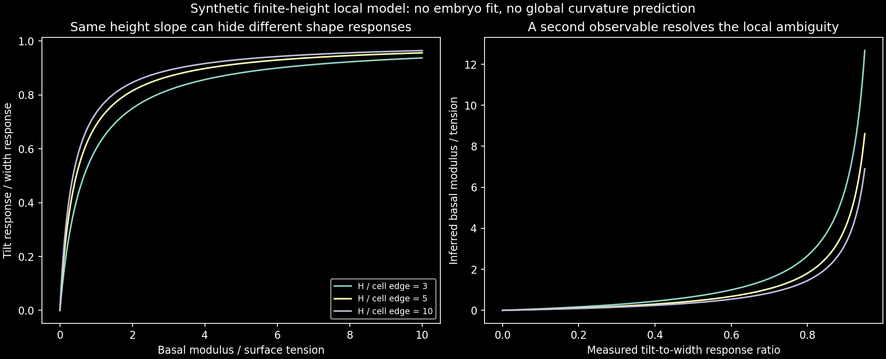

What extra observation would make the local mechanics identifiable?
This is an exact local calculation for the finite-height frustum candidate, not a newly discovered biological mechanism or a proof of global tissue prediction. It makes a concrete measurement recommendation instead of treating every fitted parameter as known.
Let the resting hexagonal cell edge be one length unit, the height-to-edge ratio be , apical/basal baseline tension be , and basal area modulus be . The finite-height energy and exact areas are in MODEL-CANDIDATES. Its rest-state Hessian is
Its first leading minor is positive and
Thus this resting state is a strict local minimum; no global uniqueness of the two-variable nonlinear energy is asserted.
Write for mean edge width and for half the apical/basal edge difference. A small lateral-tension increment gives
The height derivative at rest is . If the active lateral-tension gain is , the positive shortening slope is
For each , choose . The same measured height slope is then reproduced while the asymmetry ratio ranges from zero toward one. A height slope alone therefore does not determine the local shape response. This is a small-signal parameterization-specific result, not a proof that the entire nonlinear dose curve is uninformative.
An independent measurement of the apical/basal shape-response ratio supplies the missing information:
This inverse is unique and increasing. Its sensitivity diverges as ; recording a second observable is insufficient if it is too noisy near saturation. Once is known, the shortening slope determines , not an absolute force scale. Multiplying every tension, modulus and active gain by the same positive constant leaves equilibrium geometry unchanged.

Verification and practical meaning
The root implementation rederived the Hessian, determinant, response ratio and inverse symbolically. A separate triangulated-polyhedron integration verified exact frustum volumes and lateral areas for 100 independently sampled geometries; maximum relative discrepancy was . Receipt; replay script. Another agent independently checked the design identities in model_design_symbolic.json.
The practical recommendation is to measure paired, time-matched apical/basal geometry and initial cell dimensions under small perturbations. Separate apical and basal maxima from different times cannot be substituted for that ratio. A coupled tissue still requires shared-interface mechanics, surrounding-tissue constraints and a spatial observation operator; this calculation does not remove those requirements.